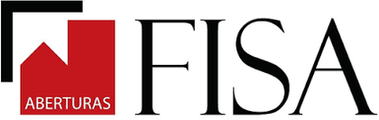

Fabricación de aberturas de aluminio · Villa Bosch, Buenos Aires
De la planilla impresa al proceso digital
Las órdenes de fabricación se imprimían en el local y se trasladaban a mano hasta la fábrica, y el stock se verificaba a ojo. Relevamos la operación completa, priorizamos por impacto y digitalizamos el circuito de producción sin frenar la venta.
Ver el caso completo